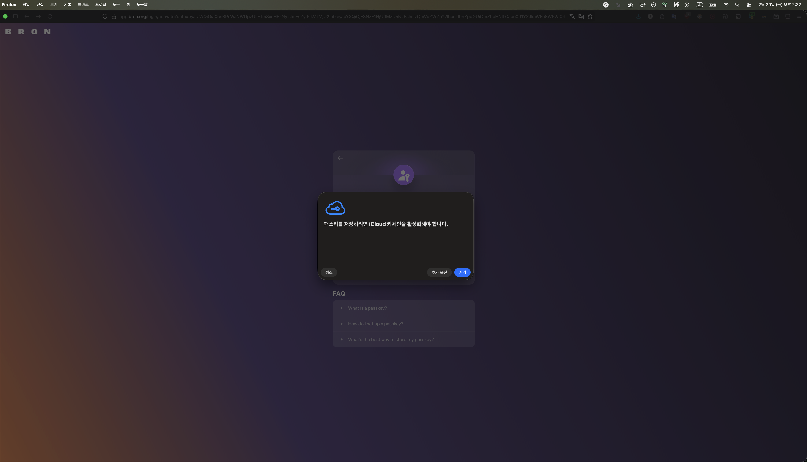
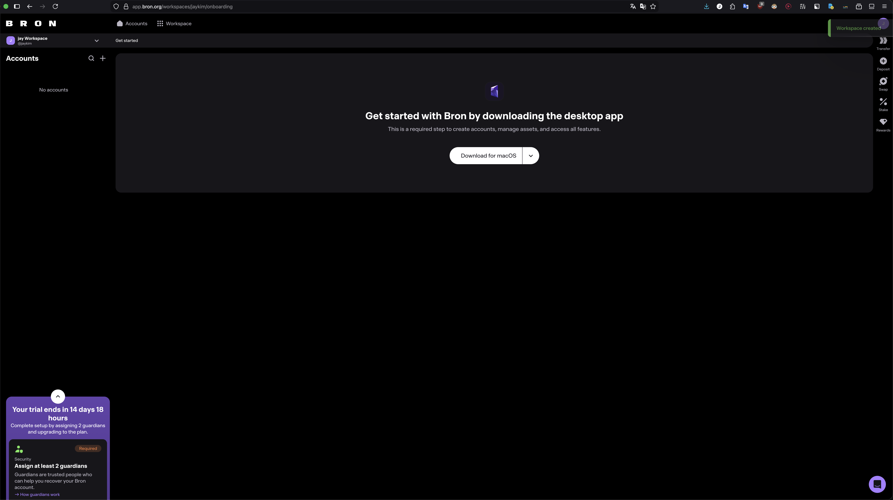
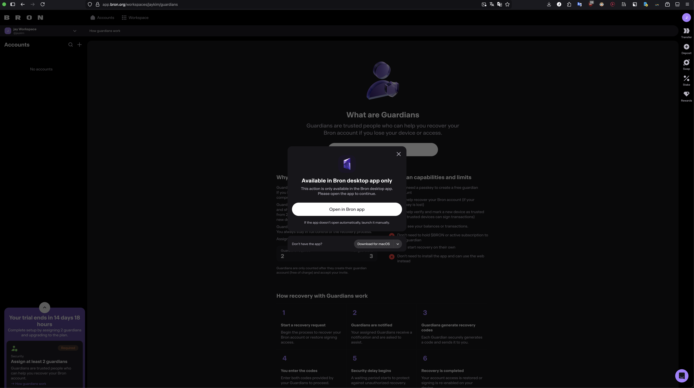
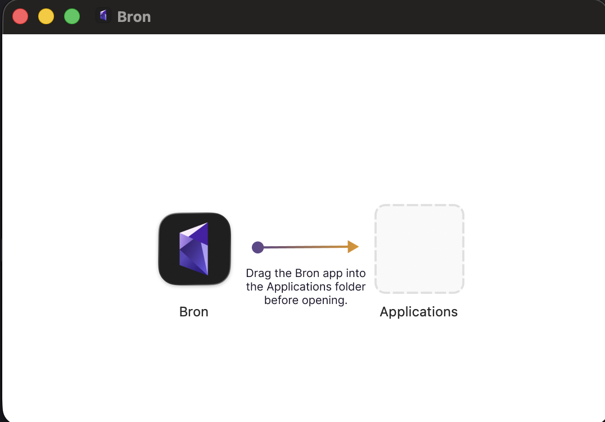
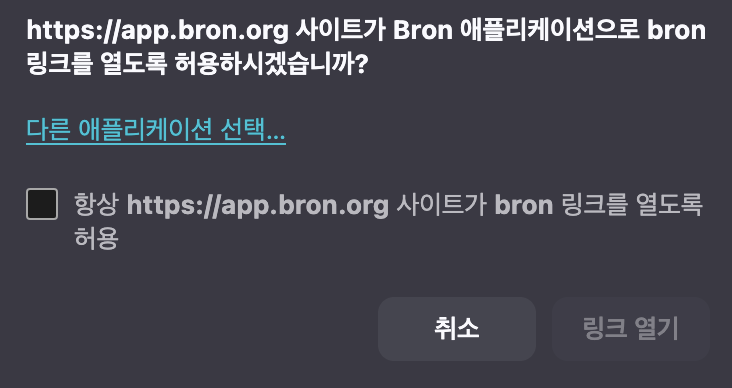
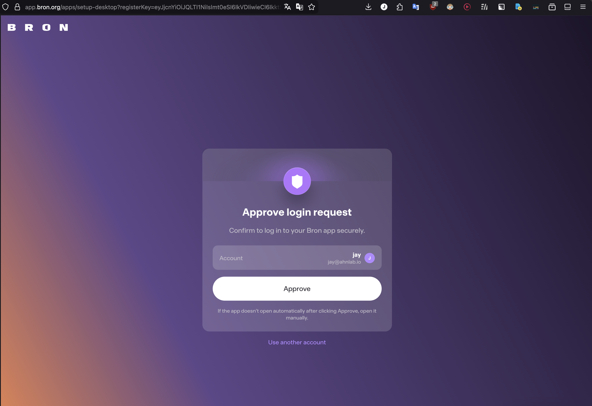
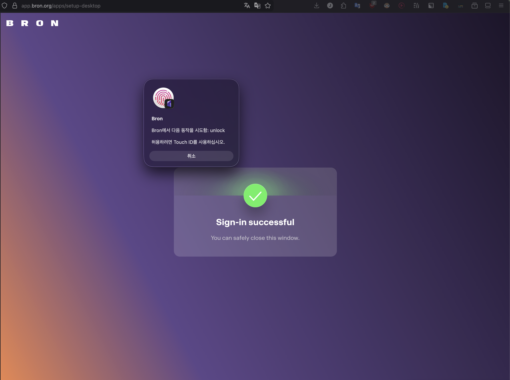

📂 클릭하여 1~15번 상세 화면 펼치기 (스크롤 가능)
1. Welcome to Bron

Bron Wallet의 첫 화면입니다. "Get Started" 버튼을 클릭하여 가입을 시작합니다.
2. Terms of Use

서비스 이용약관을 확인하고 동의합니다.
3. Set Name

사용자 이름을 설정합니다. 이 이름은 계정 식별에 사용됩니다.
4. Create Passkey

기존 비밀번호 대신 Passkey를 생성합니다. Passkey는 생체 인증과 연동되어 더 안전합니다.
5. Keychain - Activate iCloud Keychain

iCloud Keychain을 활성화하여 Passkey를 안전하게 동기화합니다.
6. Create Bron Tag (like DNS)

Bron Tag를 생성합니다. DNS처럼 기억하기 쉬운 고유 식별자로, 자산 수신 시 사용됩니다.
7. Desktop App Download

macOS 데스크탑 앱 다운로드 안내 화면입니다.
8. Desktop App Download 2

다운로드 진행 상태를 보여줍니다.
9. macOS App Install

다운로드된 앱을 Applications 폴더로 드래그하여 설치합니다.
10. Application macOS Size

설치된 앱의 용량 정보를 확인합니다.
11. Approve Application

macOS 보안 정책에 따라 앱 실행을 승인합니다.
12. Enable Touch ID

Touch ID를 활성화하여 빠르고 안전한 인증을 설정합니다.
13. Browser Login Request

브라우저에서 데스크탑 앱으로 로그인 요청을 보냅니다.
14. Login to Bron with Browser

브라우저를 통해 Bron에 로그인합니다.
15. Pass Touch ID to Sign In

Touch ID로 서명하여 로그인을 완료합니다.